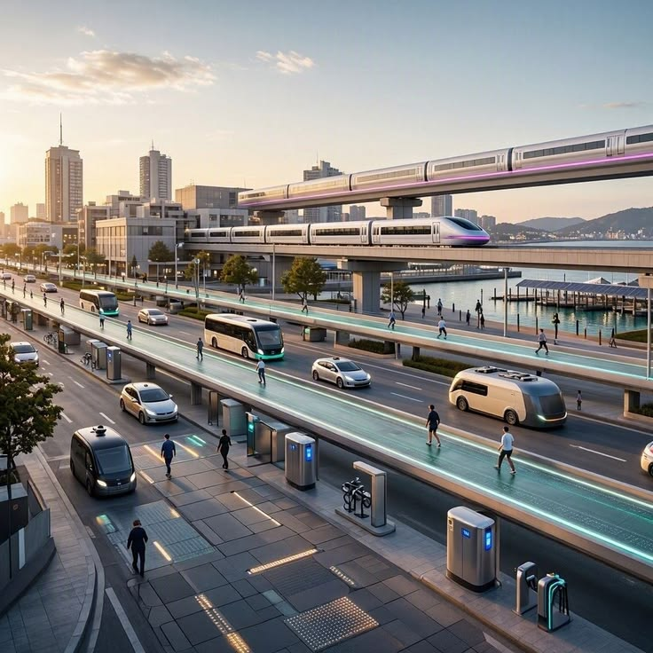
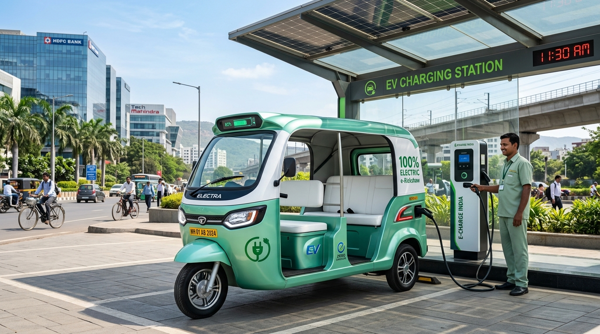
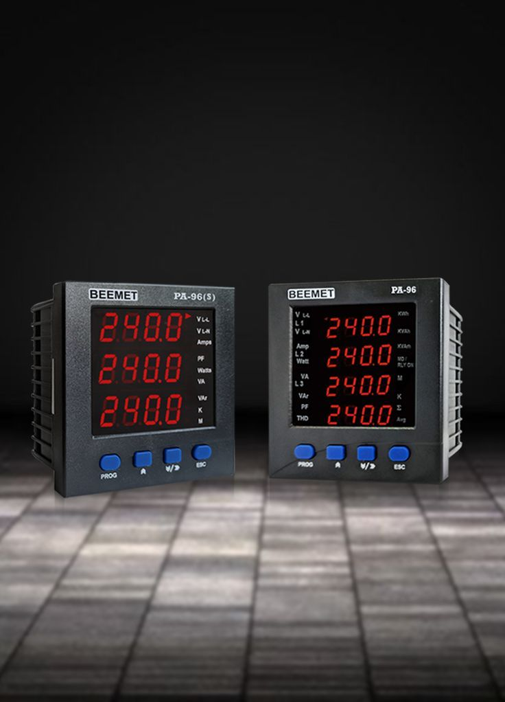
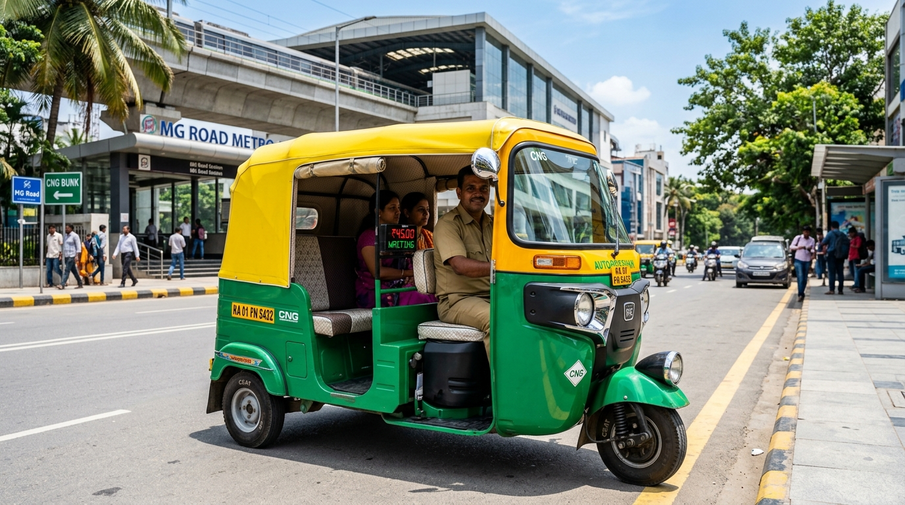
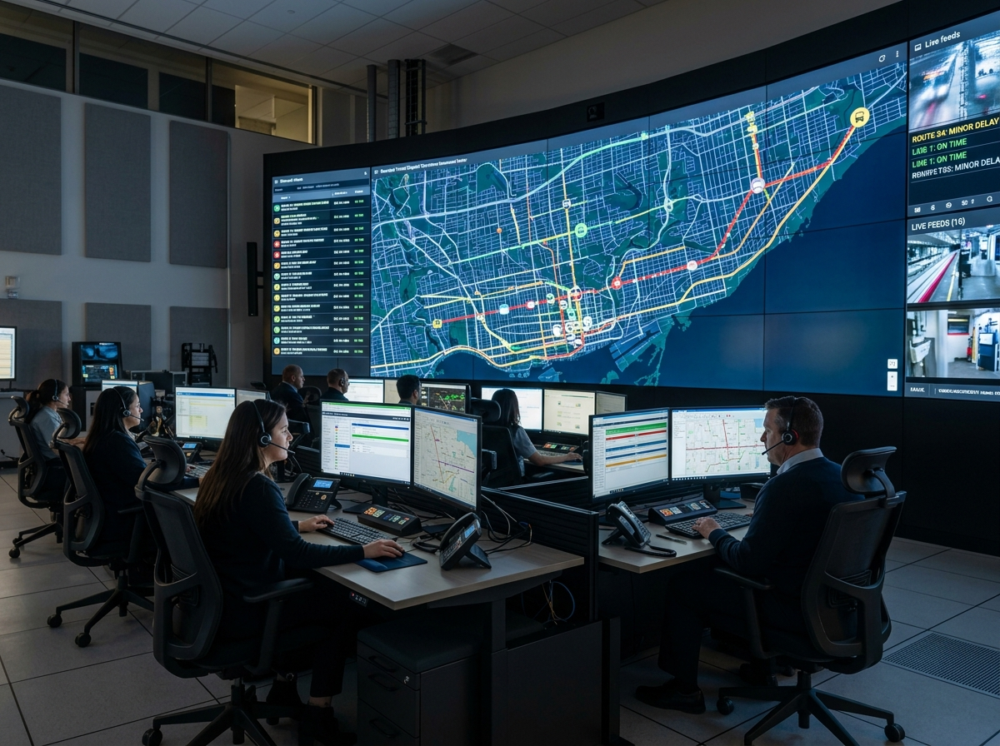
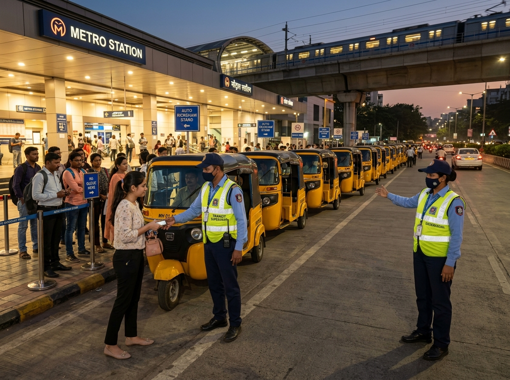
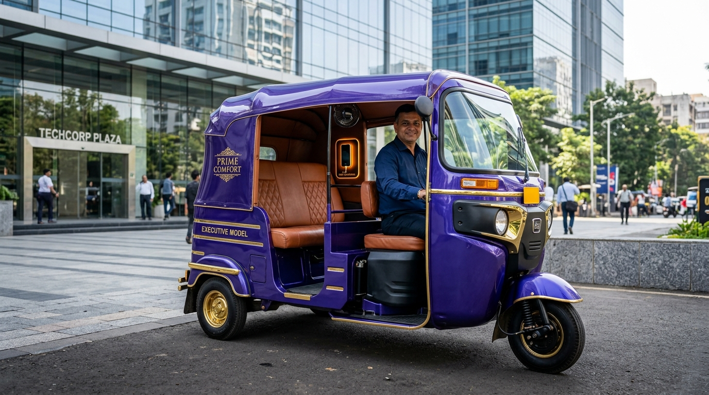

Re-Engineering City Mobility with Fair Transit
AutoRik was founded to solve the daily struggle of urban commuting. By standardizing digital metered fares, vetting drivers with local police verification, and integrating electric rickshaws, we make street hailing reliable and dignified.

The Three Pillars of AutoRik
We balance commuter convenience with driver livelihood through ethical, transparent operating policies.

Clean Green Transition
Accelerating the shift to zero-emission electric rickshaws with dedicated charging points across metro feeder hubs.

Digital Fair Metering
Eliminating arbitrary overcharging through tamper-proof digital meters that compute distances using calibrated GPS telemetry.

Partner Dignity & Welfare
Providing comprehensive health insurance, fair direct-to-bank daily payouts, and community welfare funds for every registered operator.
24/7 Operations & Central Command
Live telemetry surveillance, central dispatch control, and certified on-ground stand operations.



Transforming Urban Transit Over Time
A clear roadmap of how AutoRik transitioned from an initial pilot stand to a comprehensive city network.
Founding & Stand Pilot
Launched first 5 verified meter stands at Central Railway Terminal with 120 certified drivers.
Digital Meter Rollout
Introduced GPS-calibrated digital meters and instant UPI QR payments across 1,000+ autos.
Eco-Rickshaw Program
Deployed 500 quiet green EV rickshaws with dedicated charging bays near metro feeder lanes.
50+ Metro Express Hubs
Operating structured stands at every city metro station serving 12,500+ daily urban commuters.
Ride with Confidence or Drive as a Partner
Experience transparent metered city transit on your next trip, or register your auto rickshaw to enjoy guaranteed earnings, zero surge haggling, and full driver welfare.
